수능(국어영역) (2014-07-10 기출문제)
1. 대화의 흐름과 내용을 고려할 때, ⓐ에 들어갈 말로 가장 적절한 것은?(1번 공통지문 문제)
- 체육대회는 감춰져 있던 재능을 발견할 수 있는 기회라는 것을 부각해 봐. 우리 반을 대표하여 친구들에게 즐거움을 줄 수 있다고 하면 생각이 달라지지 않을까?
- 체육대회는 경쟁보다 함께 하는 것에 의의가 있는 행사임을 알려 줘야 해. 다 같이 즐기고 참여하는 것이 우승보다 더 값진 경험이라고 하면 충분히 공감할 거야.
- 네 의견을 내세우기 전에 체육대회에 대한 반 친구들의 생각을 먼저 수렴하는 게 어때? 민주적인 방식으로 일을 추진해야 친구들도 네 의견이 타당하다고 생각할 거야.
- 체육대회는 심신의 단련을 통해 학업의 능률을 극대화할 수 있는 계기라는 것을 설명하는 거야. 성적이 오를 수 있다는 것을 강조하면 아이들의 기대가 커질 것 같은데?
- 다른 학교들은 어떤 방식으로 체육대회를 진행하는지 먼저 조사해 보고 아이들에게 그 내용을 알려 주는 거야. 그러면 아이들도 체육대회에 대해 진지하게 생각하지 않을까?
(정답률: 알수없음)

2. 다음은 면접의 일부이다. 면접 참여자의 말하기 방식에 대한 평가로 적절하지 않은 것은? [3점]
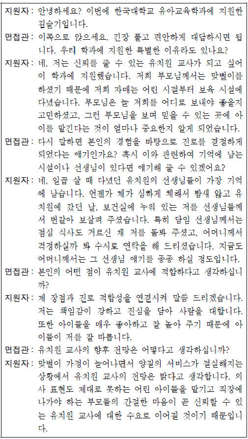
- 면접관은 지원자의 답변을 정리하여 자신이 이해한 바를 확인하고 있다.
- 면접관은 지원자에게 화제와 관련된 추가 질문을 통해 지원자에 대해 구체적으로 파악하려 하고 있다.
- 지원자는 면접관의 질문 의도를 추론하여 가치관의 차이를 좁히려 하고 있다.
- 지원자는 자신의 의미 있는 경험을 예로 들어 내용의 진실성을 확보하고 있다.
- 지원자는 면접관의 질문에 대해 핵심이 되는 내용을 먼저 제시한 후 그에 대해 구체적으로 설명하고 있다. [4~5] 다음은 수업 중 학생의 발표이다. 물음에 답하시오.
(정답률: 알수없음)
3. 위 발표에 대한 반응으로 적절하지 않은 것은?(4번 공통지문 문제)
- 활용한 자료의 출처를 밝혀 발표 내용의 신뢰성을 높이고 있군.
- 다양한 자료와 매체를 활용하여 발표의 내용을 풍부하게 하고 있군.
- 어려운 전문 용어를 다른 개념에 빗대어 설명하여 청중의 이해를 돕고 있군.
- 청중에게 질의하고 그 반응을 확인하여 청중과의 상호 작용을 강화하고 있군.
- 주어진 시간에 맞게 발표하기 위해 계획된 발표 내용을 적절하게 재구성하고 있군.
(정답률: 알수없음)
4. 윗글을 수정 ㆍ 보완하는 과정에서 <보기>를 활용하는 방안으로 적절하지 않은 것은? [3점](6번 공통지문 문제)
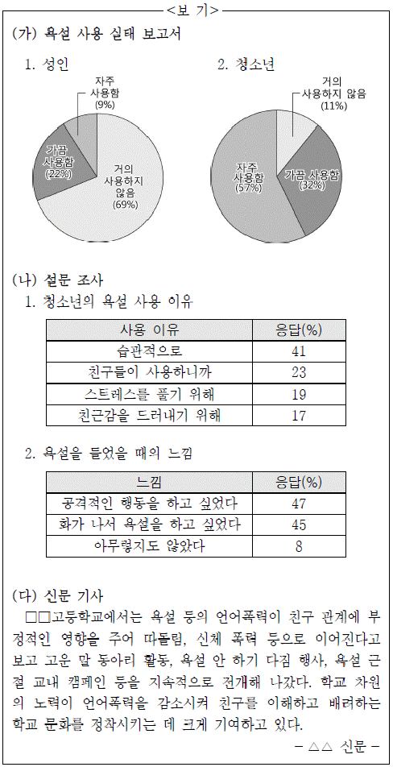
- (가)를 활용하여, 둘째 단락에서 언급한 청소년들이 욕설을 자주 사용하고 있다는 내용의 구체적 근거로 제시한다.
- (나)-2를 활용하여, 셋째 단락에서 언급한 욕설이 인격 형성이나 정서 발달에 좋지 않은 영향을 준다는 내용의 구체적 근거로 제시한다.
- (다)를 활용하여, 넷째 단락에서 언급한 잘못된 언어 습관을 바로 잡는 캠페인이 긍정적인 결과를 가져올 수 있음을 부각한다.
- (가)와 (나)-1을 활용하여, 셋째 단락에 욕설 사용의 주된 이유가 스트레스에 있음을 보완한다.
- (나)-2와 (다)를 활용하여, 셋째 단락에 욕설 대신 고운 말을 쓰는 것이 친구 관계에 긍정적 영향을 준다는 점을 추가한다.
(정답률: 알수없음)
5. 다음 [자료]를 읽고 [조건]에 맞게 쓴 글로 가장 적절한 것은?
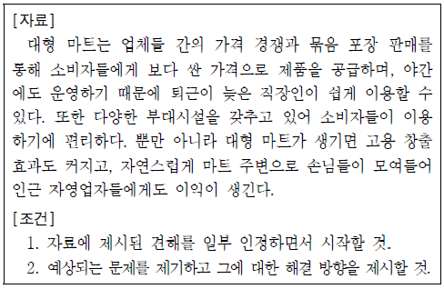
- 대형 마트는 업체 간 경쟁으로 제품의 가격을 낮출 수 있다. 그러나 영세 상인들은 이를 감당할 수 없어서 생존권을 위협받게 된다.
- 대형 마트가 소비자들에게 편리함을 제공하기는 한다. 하지만 대부분 밤늦게까지 운영을 하고 있어 에너지를 불필요하게 낭비한다.
- 대형 마트는 과도한 소비를 조장할 수 있다. 또한 제품 운송과 소비자 이동 과정에서 교통 정체를 유발한다. 따라서 대형 마트의 영업시간을 법적으로 규제해야 한다.
- 대형 마트는 주변 상권을 활성화시킨다. 유동 인구가 많아져서 자연스럽게 인근 점포의 매출 상승에 기여하기 때문이다. 따라서 대형 마트와 주변 자영업자의 관계는 상호 보완적이다.
- 대형 마트는 묶음 포장으로 판매하기 때문에 제품의 가격이 저렴하기는 하다. 하지만 필요 이상의 제품을 구매하게 되어 자칫 과소비로 이어질 수 있다. 따라서 합리적 소비를 위한 소비자들의 노력이 필요하다.
(정답률: 알수없음)
6. ㉠~㉤을 고쳐 쓰기 위한 방안으로 적절하지 않은 것은?(9번 공통지문 문제)
- ㉠은 단어의 사용이 적절하지 않으므로 ‘주범’으로 바꾼다.
- ㉡은 앞 문단과의 의미 관계를 고려하여 ‘그렇다면’으로 바꾼다.
- ㉢은 불필요한 반복을 피하기 위해 ‘스마트폰을 적당히 사용하고 목적에 맞게 쓴다면’으로 고친다.
- ㉣은 피동 표현이 잘못 사용되었으므로 ‘쓰여진다면’으로 고친다.
- ㉤은 글의 흐름과 어긋나는 문장이므로 삭제한다.
(정답률: 알수없음)
7. 다음은 ‘사전 활용하기’ 학습 활동을 위한 자료이다. 이에 대해 탐구한 내용으로 적절하지 않은 것은?
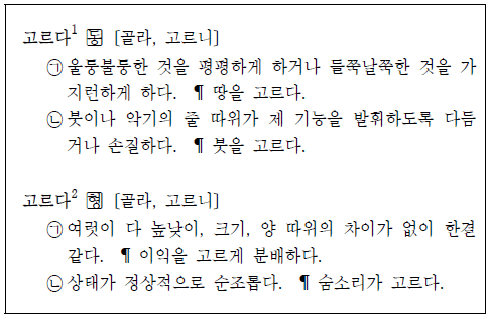
- ‘고르다1 ㉠’의 용례 ‘땅을 고르다’에서 ‘고르다’의 유의어로는 ‘메우다’가 가능하겠군.
- ‘고르다2 ㉠’의 용례로 ‘방바닥이 고르지 않다’를 들 수 있겠군.
- ‘고르다2 ㉡’의 용례 ‘숨소리가 고르다’에서 ‘고르다’의 반의어로는 ‘거칠다’가 가능하겠군.
- ‘고르다1’, ‘고르다2’의 활용 정보에 ‘골라’, ‘고르니’로 나타난 것을 보니 불규칙 용언이겠군.
- ‘고르다1’, ‘고르다2’의 품사 표시를 보니, ‘악기의 줄을 고르다’의 ‘고르다’는 동사, ‘치아가 고르다’의 ‘고르다’는 형용사이겠군.
(정답률: 알수없음)
8. 다음 ㄱ~ㄹ의 음운 변동에 대한 설명으로 적절하지 않은 것은? [3점]
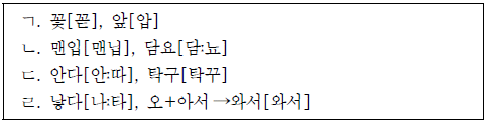
- ㄱ과 ㄴ의 변동이 모두 일어난 예로 ‘홑이불→[혼니불]’을 들 수 있다.
- ㄱ과 ㄷ은 모두 교체에 해당하는 음운 변동 현상이다.
- ㄱ과 ㄷ의 변동이 모두 일어난 예로 ‘엎다→[업따]’를 들 수 있다.
- ㄹ의 [나ː타]는 자음 축약에, [와서]는 모음 축약에 해당된다.
- ㄹ의 [와서]와 같은 예로 ‘집에 가아→집에 가[가]’를 들 수 있다.
(정답률: 알수없음)
9. <보기>를 참고할 때, 밑줄 친 부분에 대한 설명으로 적절하지 않은 것은?
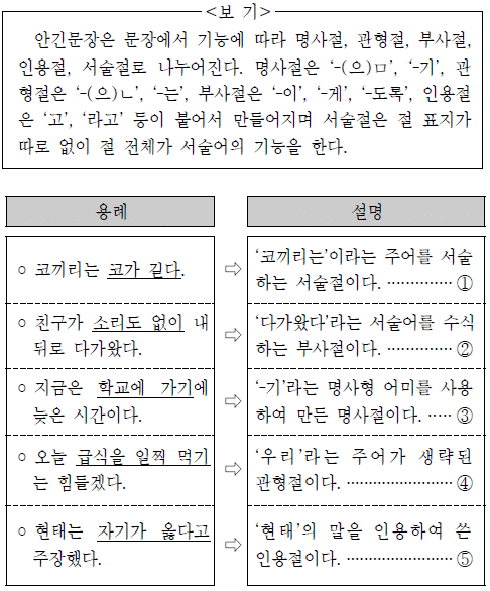
- ①
- ②
- ③
- ④
- ⑤
(정답률: 알수없음)
10. <보기>의 예문을 통해 문장의 의미 관계를 이해한 내용으로 적절하지 않은 것은?
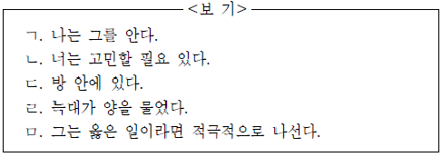
- ㄱ : 반의어를 사용한 반의 관계 문장으로 ‘나는 그를 모른다’를 쓴다.
- ㄴ : 부정 표현을 사용한 반의 관계 문장으로 ‘너는 고민할 필요 있지 않다’를 쓴다.
- ㄷ : 반의 관계에 있는 문장으로 만들면, ‘방 안에 없다’ 외에 ‘방 밖에 있다’도 가능하다.
- ㄹ : 피동 표현을 통해 유의 관계에 있는 문장을 만들면, ‘양이 늑대에게 물렸다’가 된다.
- ㅁ : 관용적 표현을 통해 유의 관계에 있는 문장을 만들면, ‘그는 옳은 일이라면 발 벗고 나선다’가 된다.
(정답률: 알수없음)
11. <보기>의 ㉠~㉤에 나타난 심리적 태도로 적절하지 않은 것은?
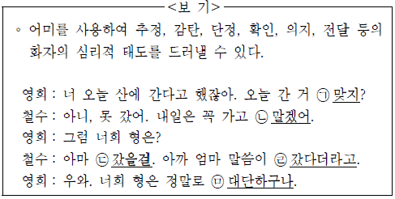
- ㉠ : 확인
- ㉡ : 의지
- ㉢ : 추정
- ㉣ : 단정
- ㉤ : 감탄
(정답률: 알수없음)
12. 윗글을 바탕으로 <보기>를 감상한 내용으로 적절하지 않은 것은? [3점](16번 공통지문 문제)
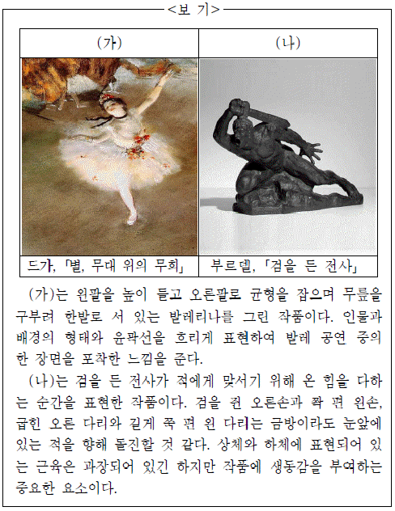
- (가)는 발레리나의 의상과 팔다리의 윤곽선을 흐릿하게 하여 동세를 표현하는 방법을 사용한 것이군.
- (가)에 그려진 발레리나의 팔다리 모습을 보면서 감상자들은 연속적인 움직임을 머릿속에 떠올리겠군.
- (나)를 감상하는 사람은 특정 방향에서 인물의 표정이나 근육을 살펴야 동세를 보다 잘 느낄 수 있겠군.
- (나)의 감상자는 오른손과 왼손, 오른쪽 다리와 왼쪽 다리의 대비를 통해 강렬한 움직임을 느끼게 되는군.
- (가)와 (나)의 작가는 동세 표현을 위해 움직임이 강한 활동적 장면을 선택한 것이겠군.
(정답률: 알수없음)
13. <보기>는 식후 혈당량의 변화를 나타낸 그래프이다. 윗글을 바탕으로 ㉠~㉤을 이해할 때, 적절하지 않은 것은? [3점](18번 공통지문 문제)
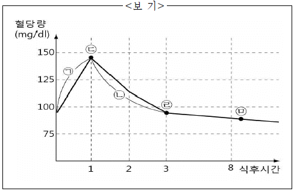
- ㉠에서는 간에 저장된 글리코겐을 분해하여 포도당을 만드는 호르몬의 분비가 감소하겠군.
- ㉡은 세포가 혈액으로부터 포도당을 흡수하는 것을 촉진하는 역할을 하는 호르몬에 의한 결과이겠군.
- ㉢지점에서 혈당량이 떨어지지 않는다면 β세포의 기능에 문제가 있는 것이겠군.
- ㉣지점에서 운동을 한다면 β세포가 분비하는 호르몬이 증가하겠군.
- ㉤지점에서 혈당량을 확인하면 정상으로 판정할 수 있겠군.
(정답률: 알수없음)
14. 윗글을 바탕으로 <보기>의 선생님의 질문에 답한다고 할 때 가장 적절한 것은?(18번 공통지문 문제)
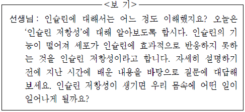
- 혈액 중의 포도당 농도가 높아지게 됩니다.
- 이자가 인슐린과 글루카곤을 과다 분비하게 됩니다.
- 간에서 포도당을 글리코겐으로 빠르게 저장하게 됩니다.
- 아미노산과 지방산을 저장 부위에서 분리시키게 됩니다.
- 인슐린이 지방의 형태로 축적되는 현상이 일어나게 됩니다.
(정답률: 알수없음)
15. 윗글의 ‘양주’와 ‘한비자’가 <보기>의 밑줄 친 인물들에 대해 평가한다고 할 때, 가장 적절한 것은? [3점](21번 공통지문 문제)
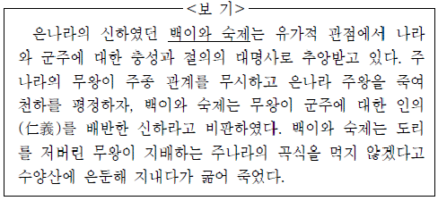
- 양주는 사회가 추구하는 가치 규범에 얽매여 개인의 삶을 잃었다는 점에서 부정적으로 볼 것이다.
- 양주는 나라와 백성은 안중에도 없이 무책임하게 현실을 도피한 극단적인 개인주의자들로 볼 것이다.
- 한비자는 개인적인 판단에 근거하여 군주를 억압하였다는 점에서 긍정적으로 볼 것이다.
- 한비자는 개인적 이익을 추구한 것에 대해 강력한 공권력으로 제재할 수 있다고 볼 것이다.
- 양주와 한비자 모두 부당한 국가 권력과 시류에 휩쓸리지 않은 무욕의 처신을 높이 인정하여 본보기로 삼을 만하다고 볼 것이다.
(정답률: 알수없음)
16. ㉠의 이유로 가장 적절한 것은?(21번 공통지문 문제)
- 국가 지향적 이념 추구가 개인의 삶을 위협한다고 보았기에
- 당대 정치가들이 난세를 극복하기에는 능력이 부족하다고 보았기에
- 법과 제도만으로는 인간의 다양한 욕구를 충족할 수 없다고 보았기에
- 전쟁으로 인한 제도의 혼란이 국가의 권위를 유지하기 어렵다고 보았기에
- 획일화된 문화와 사회 제도가 국가체제 유지에 효율적이지 않다고 보았기에
(정답률: 알수없음)
17. 문맥상, ⓐ～ⓔ를 바꿔 쓰기에 적절하지 않은 것은?(21번 공통지문 문제)
- ⓐ : 나누어 차지하면서
- ⓑ : 이끌었던
- ⓒ : 스스로 깨달아야만
- ⓓ : 꼼꼼히 따지고
- ⓔ : 끼어드는
(정답률: 알수없음)
18. 윗글을 통해 <보기>를 이해한 내용으로 적절하지 않은 것은? [3점](25번 공통지문 문제)
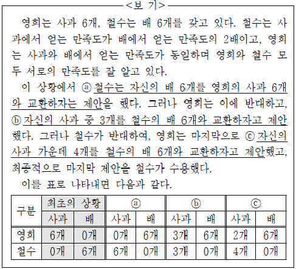
- ⓐ에 대해 영희가 반대한 이유는 철수의 만족도는 최초에 비해 2배로 증가하지만, 영희의 만족도는 최초와 같기 때문이다.
- ⓑ에 대해 철수가 반대한 이유는 영희의 만족도는 최초에 비해 1.5배 증가하지만, 철수의 만족도는 최초와 같기 때문이다.
- ⓒ에 대해 서로 합의한 이유는 영희와 철수의 만족도 모두 최초에 비해 증가하였고, 결국 모두에게 이익이 되기 때문이다.
- 최초의 상황이 ⓐ나 ⓑ로 바뀌어도 모두 파레토 개선으로 볼 수 있다.
- ⓐ～ⓒ 중 영희가 얻을 수 있는 만족도는 ⓒ에서 가장 크며, 철수 역시 그러하기에 ⓒ를 파레토 최적으로 볼 수 있다.
(정답률: 알수없음)
19. ㉠에 들어갈 내용으로 가장 적절한 것은?(25번 공통지문 문제)
- 선택의 기회가 많을수록 이익은 줄어드는 경우
- 경제 주체 간의 타협보다는 경쟁이 중요한 이유
- 소비자의 기호에 따라 상품 가격이 결정되는 상황
- 합리적인 투자를 위해 이기적인 태도가 필요한 이유
- 모두에게 손해가 되지 않으면서 효용을 증가시키는 상황
(정답률: 알수없음)
20. ⓐ～ⓕ에 대한 설명으로 적절하지 않은 것은?(28번 공통지문 문제)
- ⓐ는 송신 정보 데이터이다.
- ⓑ는 전송 오류를 알기 위해 ⓐ에 ⓒ를 더한 데이터이다.
- ⓒ는 ⓑ의 데이터 비트 전체의 개수에 따라 값이 결정된다.
- ⓓ에서 열잡음으로 인해 전송 오류가 발생할 수 있다.
- ⓕ에서 ⓒ의 값과 ⓔ의 분석 결과를 비교해 전송 오류를 확인할 수 있다.
(정답률: 알수없음)
21. <보기>는 ‘순방향 오류 정정 방식’을 통해 전송된 수신 데이터이다. 윗글을 바탕으로 <보기>에 대해 이해한 내용으로 적절한 것을 있는 대로 고른 것은?(28번 공통지문 문제)
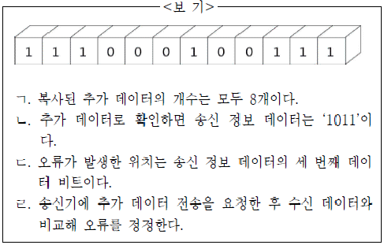
- ㄱ, ㄴ
- ㄱ, ㄷ
- ㄷ, ㄹ
- ㄱ, ㄴ, ㄷ
- ㄴ, ㄷ, ㄹ
(정답률: 알수없음)
22. [A]∼[C]에 대한 설명으로 적절하지 않은 것은?(31번 공통지문 문제)
- [A]는 과거 시제를 사용하여 지난날을 회상하고 있다.
- [A]는 비유적 표현을 사용하여 대상에 동적 이미지를 부여하고 있다.
- [B]는 일어날 수 있는 비극적 상황을 가정하고 있다.
- [C]에서는 시간적 배경을 통해 화자의 정서와 분위기를 암시하고 있다.
- [C]는 공간의 변화를 통해 화자의 태도 변화를 드러내고 있다.
(정답률: 알수없음)
23. <보기>를 참고하여 윗글을 감상한 내용으로 적절하지 않은 것은? [3점](31번 공통지문 문제)
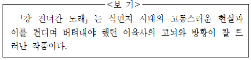
- ‘섣달’과 ‘얼어 조이던 밤’은 고통스러운 식민지 현실을 암시하는 배경이군.
- ‘어린 날개’는 식민지 현실에서 느끼는 시인의 무력감을 상징적으로 드러내고 있군.
- ‘떨어져 타서 죽겠죠’는 자신의 삶이 ‘노래’의 운명처럼 평탄하지 않을 수 있음을 보여주는군.
- ‘사막’은 ‘푸른 하늘’이 덮여 있는 공간으로, 잃어버린 자아를 회복할 수 있는 공간으로 나타나는군.
- ‘또 한 가락 어디멘가’는 ‘노래’가 간 곳을 몰라 고뇌하는 화자의 모습을 보여주는 것이군.
(정답률: 알수없음)
24. 윗글을 감상한 내용으로 적절하지 않은 것은?(34번 공통지문 문제)
- ‘수많은 아르네’는 욕망하다 단념해 버리는 속인들의 삶의 모습이라 할 수 있겠군.
- ‘무(無)에 접(接)하는 것’은 용기가 필요하다는 점에서 영웅의 길로 볼 수 있겠군.
- ‘부단한 건설’은 새로운 것을 욕망하고 추구하는 삶의 과정이라 할 수 있겠군.
- ‘고상한 섭생법’은 적당히 단념하고 적당히 욕망하는 것으로 글쓴이가 긍정하지 않는 삶의 모습이군.
- ‘골짜기 밑바닥’은 모든 단념과 욕망을 끝낸 후 도달한 평온한 삶의 단계라 할 수 있군.
(정답률: 알수없음)
25. 윗글을 통해 알 수 있는 내용으로 가장 적절한 것은?(36번 공통지문 문제)
- 진씨는 깐둥이가 특별한 오리라는 것을 알고 돈을 주고 사들였다.
- 깐둥이 뱃속에 금반지가 있다는 소문으로 인해 진씨가 곤경에 빠진다.
- 진씨가 파출소에 간 사이에 사람들은 깐둥이를 잡아 의문을 해결하려고 한다.
- 진씨는 깐둥이가 다친 것에 화를 내며 깐둥이와 함께 마을을 떠나기로 결심한다.
- 사람들은 진씨로부터 깐둥이를 빼앗기 위해 깐둥이에 대한 자신들의 권리를 주장한다.
(정답률: 알수없음)
26. <보기>를 참고하여 윗글을 감상할 때, 적절하지 않은 것은?(36번 공통지문 문제)
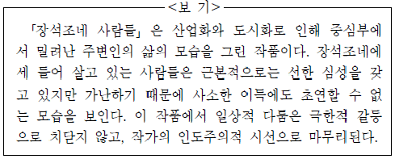
- 한강에 깐둥이를 놓아준 진씨를 통해 따뜻한 인간적인 면모를 느낄 수 있었어.
- 진씨를 장물애비로 신고한 윗집 사람들을 통해 각박해진 세태를 짐작할 수 있었어.
- 사람들에게 거칠게 말하는 경찰을 통해 개인 간의 일상적 시비가 사회적으로 확대되는 양상을 볼 수 있었어.
- 장석조네 사람들의 모습에서 사소한 이득에도 초연할 수 없는 가난한 주변인들의 현실을 발견할 수 있었어.
- 진씨의 안위를 궁금해 하고 걱정하는 사람들의 모습에서 풍족하지는 못하지만 서로를 위해주는 정을 느낄 수 있었어.
(정답률: 알수없음)
27. ㉠～㉤을 이해한 내용으로 적절하지 않은 것은? [3점](36번 공통지문 문제)
- ㉠ : 깐둥이에 대한 자신의 몫을 주장하는 광수 애비의 속내가 드러난다.
- ㉡ : 깐둥이를 둘러싼 사람들의 이야기가 지나치다고 보는 최씨의 생각이 드러난다.
- ㉢ : 윗집 사람들로 인해 사건이 일어난 것이었음을 보여준다.
- ㉣ : 깐둥이의 이용 가치를 잘 모르는 진씨를 조롱하고 있는 쌍용 아범의 태도를 보여준다.
- ㉤ : 사람들의 말 속에서 몇 번이나 죽임을 당했던 깐둥이에 대한 안타까움이 드러난다.
(정답률: 알수없음)
28. (가)와 (나)에 대한 이해로 적절하지 않은 것은?(40번 공통지문 문제)
- (가)의 ‘어져 내 일이야 그릴 줄을 모르던가’는 영탄과 설의적 표현을 활용하여 화자의 회한을 나타내고 있다.
- (가)의 ‘제 구태여’는 행동의 주체를 중의적으로 표현하여 화자의 복잡한 심경을 드러내고 있다.
- (가)의 ‘보내고 그리는 정(情)’은 화자의 행위와 심리를 대비시켜 임을 그리워하는 화자의 모습을 드러내고 있다.
- (나)의 ‘저는 나귀 한치 마소’는 다리를 절며 느리게 걷는 ‘나귀’를 통해 임과 함께 있는 시간을 연장하고 싶은 화자의 심정을 담아내고 있다.
- (나)의 ‘꽃 아래 눈물 적신 얼굴’은 감정이입을 통해 화자의 암담한 심정을 강조하고 있다.
(정답률: 알수없음)
29. (다)와 <보기>를 비교하여 감상한 내용으로 적절하지 않은 것은? [3점](40번 공통지문 문제)
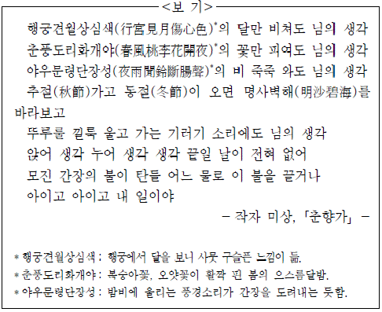
- (다)와 <보기>는 독백적 어조를 통해 화자의 심정을 드러내고 있군.
- (다)와 <보기>는 유사한 구조를 지닌 문장을 반복하여 화자의 정서를 강조하고 있군.
- (다)와 달리 <보기>는 계절의 변화에 따른 화자의 그리움을 드러내고 있군.
- <보기>와 달리 (다)는 상황을 가정하여 화자의 소망을 드러내고 있군.
- <보기>와 달리 (다)의 의성어는 화자에게 원망의 감정을 불러일으키고 있군.
(정답률: 알수없음)
30. [A]와 [B]의 말하기에 대한 설명으로 적절한 것은?(43번 공통지문 문제)
- [A]와 [B]는 비유를 활용하여 상대를 치켜세우고 있다.
- [A]와 [B]는 윤리적 도리를 내세워 상대를 질책하고 있다.
- [A]는 [B]와 달리 앞으로 닥칠 부정적 상황을 암시하여 상대를 설득하고 있다.
- [B]는 [A]와 달리 자신의 의도를 숨기며 말하고 있다.
- [B]는 [A]와 달리 상황을 과장하여 상대의 잘못을 지적하고 있다.
(정답률: 알수없음)
31. <보기>를 참고하여 윗글을 감상한 내용으로 적절하지 않은 것은?(43번 공통지문 문제)
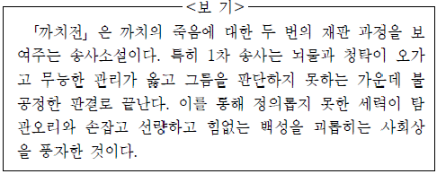
- 암까치는 정의롭지 못한 세력에게 피해를 입는 인물로 볼 수 있겠군.
- 사건의 진상을 제대로 파악하지 못하고 있는 군수는 무능한 관리라 할 수 있겠군.
- 할미새와 같이 증언을 회피하려고만 하는 인물로 인해 공정한 판결이 어려워졌겠군.
- 비둘기를 결박하는 비금들의 등장은 탐관오리를 응징하여 불공정한 재판을 없애려는 서민들의 소망을 드러낸 것이겠군.
- 두꺼비는 돈이면 뭐든지 할 수 있다는 생각을 가진 인물로, 뇌물을 받고 청탁에 관여하는 부정한 세력으로 볼 수 있겠군.
(정답률: 알수없음)